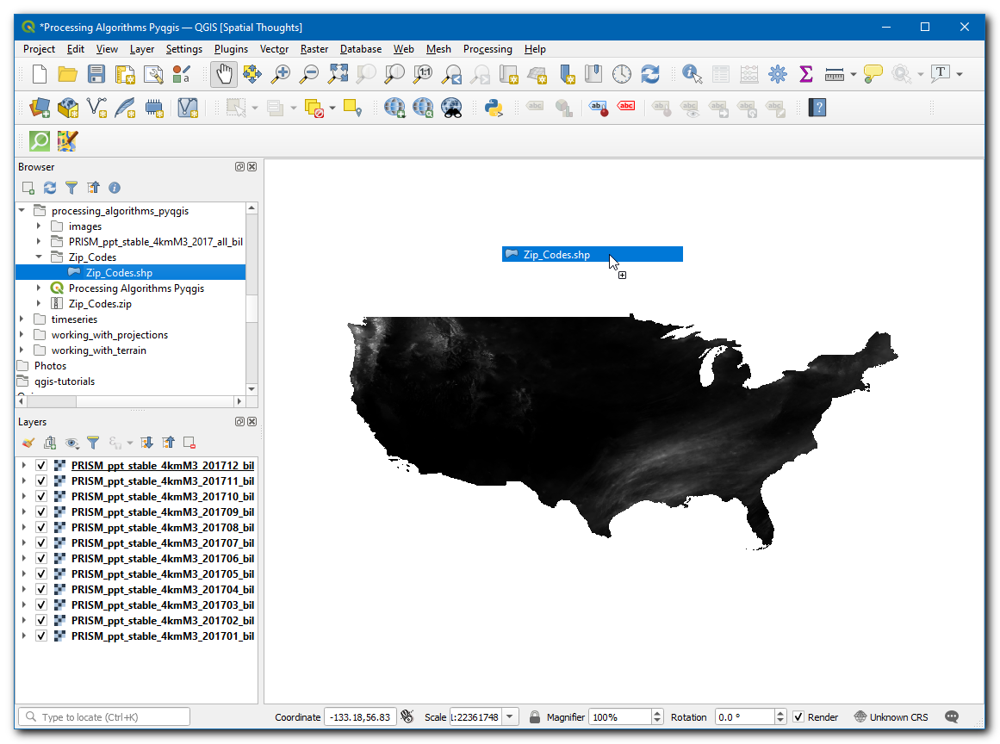
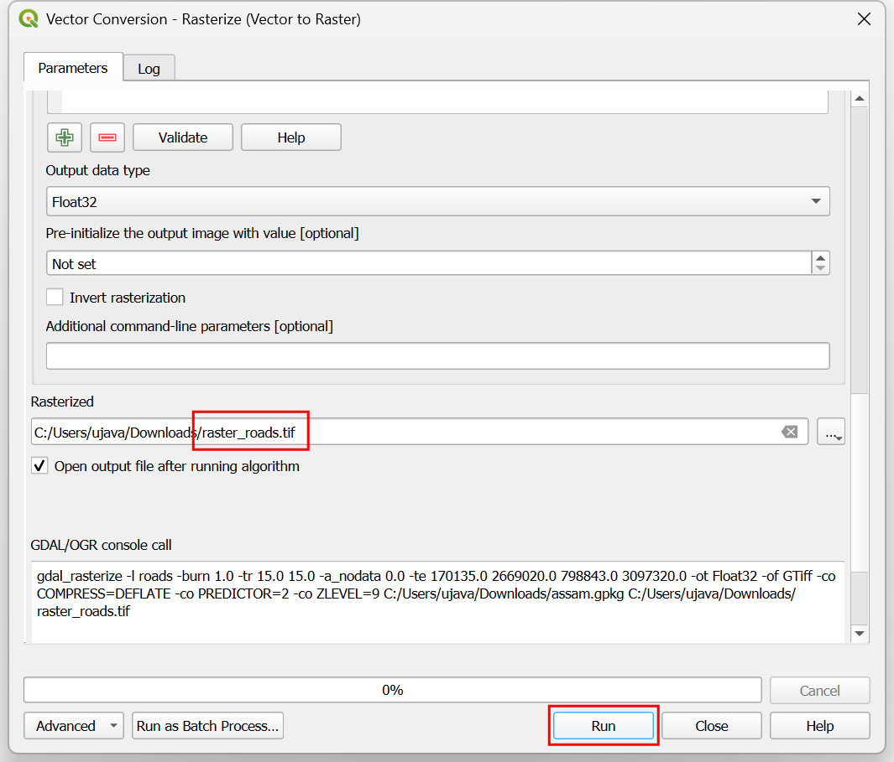
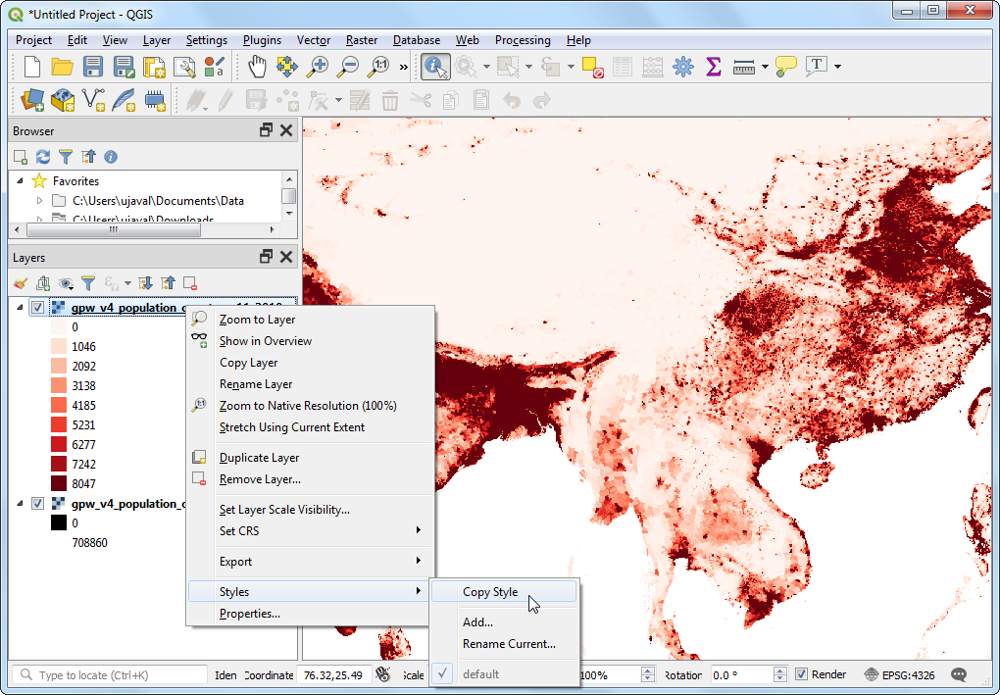
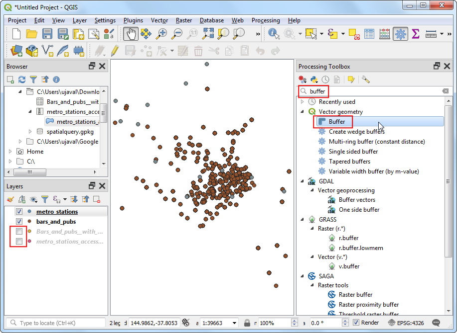

Einfache Visualisierung und Analyse von Rasterdaten (QGIS3)¶
Viele wissenschaftliche Beobachtungen und Forschungen erzeugen Rastendaten. Rasterdaten sind Gitter von Pixeln mit bestimmten Werten. Mit Hilfe von mathematischen Operationen auf den Pixelwerten kann man interessante Analysen durchführen. QGIS hat einige einfache Analysemöglichkeiten im Rasterrechner integriert. In dieser Anleitung werden wir die Möglichkeiten zur Darstellung von Rasterdaten und die Funktionalität des Rasterrechners erkunden.
Überblick über die Aufgabe¶
Wir werden einen Gitterdatensatz der weltweiten Bevölkerung benutzen, um eine thematische Karte der Bevölkerungsentwicklung zwischen den Jahren 2000 und 2010 zu erstellen.
Weitere Fähigkeiten die wir erlernen¶
Wie man einen Layerstil zwischen Layern kopiert
Beschaffung der Daten¶
Wir werden folgenden Datensatz der Columbia Universität benutzen: Gridded Population of the World (GPW) v4. Im Detail brauchen wir Population Count für die gesamte Erde mit einer Auflösung von 2,5 Minuten im GeoTIFF Format für die Jahre 2000 und 2010. Man benötigt einen freien Zugang, um die Daten herunterzuladen: Earth Data account.

Der Einfachheit halber können wir eine Kopie der Datensätze unter folgenden links herunterladen:
gpw-v4-population-count-rev11_2000_2pt5_min_tif.zip
gpw-v4-population-count-rev11_2010_2pt5_min_tif.zip
Datenquelle [GPW4]
Arbeitsablauf¶
Wir öffenen QGIS und gehen im Browser zu den heruntergeladenen Dateien. Erweitere die
gpw-v4-population-count-rev11_2000_2pt5_min_tif.zipDatei und ziehe die Dateigpw-v4-population-count-rev11_2000_2pt5_min.tifin den Arbeitsbereich.

Der neue Layer
gpw-v4-population-count-rev11_2000_2pt5_minwird nun im Bereich Layer angezeigt. Analog verfahren wir mit der Dateigpw-v4-population-count-rev11_2010_2pt5_min_tif.zip. Wir erweitern sie und ziehen die Dateigpw-v4-population-count-rev11_2010_2pt5_min.tifin den Arbeitsbereich.

Wir schauen uns die Layer näher an. Klicke auf den Knopf Objekte abfragen in der Attributwerkzeugleiste. Nach Auswahl des Tools können wir in einen beliebigen Bereich der Arbeitsfläche klicken.

Der zu dem jeweiligen Pixel gehörende Wert wird in einem neuen Bereich Abfrageergebnisse angezeigt. Wir ändern den Modus unter Abfrageergebnisse bei Modus zu
Von oben nach unten. Damit werden die Pixelwerte aller Rasterlayer angezeigt und nicht nur die des obersten Layers. Wir können die Werte der beiden Layer vergleichen. Die Auflösung der Rasterzellen beträgt in etwa 5km x 5km. Die Pixelwerte stellen die Bevölkerungssumme bezogen auf die Fläche des Pixels dar (25 Quadratkilometer).

Wir schließen die Abfrageergebnisse. Wir werden jetzt eine bessere Darstellung der Layer erzeugen. Klicke auf den Knopf Layergestaltungsfenster öffnen im Bereich Layer.

Im Bereich Layergestaltung panel wählen wir im dropdown-Menü neben Symbolisierung die Darstellung
Einkanalpseudofarbe.

This renderer will style the layer using a color ramp. The default color ramp is white-red where the minimum value will be assigned the white color and the maximum value in the layer will be assigned the red color. The intermediate values will be assigned a shade of red linear interpolation. Expand the Min / Max Value Settings and choose
Cumulative count cutoption. You will see that the map visualization is much better now. The standard data range is set from 2% to 98% of the data values, meaning that the outliers will not be used to set the minimum and maximum values, resulting in a much more representative visualization.

Wir schließen die Layergestaltung. Ein ähnliche Darstellung können wir für den anderen Layer einstellen. Es gibt aber einen einfacheren Weg, um die Gestaltung von einem Layer auf einen anderen zu übertragen. Klicke mit der rechten Maustaste auf den Layer
gpw-v4-population-count-rev11_2010_2pt5_minund wähle .

Klicke jetzt auf den noch unveränderten Layer
gpw-v4-population-count-rev11_2000_2pt5_minund wähle .

Dieselben Darstellungsparameter werden nun auf den Layer angewendet. Diese Funktionalität ist besonders nützlich, wenn man verschiedene Layer anhand derselben Kategorisierung vergleichen möchte. Durch Umschalten der Sichtbarkeit des obersten Layers, sieht man die Veränderung der Bevölkerungszahlen.

Unsere Aufgabe ist die Erstellung einer thematischen Karte zur Änderung der Bevölkerung. Wir werden nun den Unterschied zwischen den 2 Layern berechnen und daraus einen weiteren Rasterlayer erstellen. Der neue Rasterlayer enthält für jeden Pixel die Bevölkerungsdifferenz. Gehe zu .
Im Bereich Rasterkanäle kann man die Layer durch Doppelklick auswählen. Das Band wird hinter dem Layernamen und einem
@angezeigt. Da unsere beiden Rasterlayer nur ein Band enthalten, wird bei beiden Layern@1angehängt. Der Rasterrechner führt mathematische Operationen auf den Rasterpixeln aus. In diesem Fall wollen wir eine einfache Formel verwenden, um die Bevölkerungszahl 2000 von der Bevölkerungszahl 2010 abzuziehen. Wir geben den folgenden Ausdruck ein. Als nächstes drücken wir auf den … Knopf neben Ausgabelayer.
"gpw-v4-population-count-rev11_2010_2pt5_min@1" - "gpw-v4-population-count-rev11_2000_2pt5_min@1"
Gebe
population_change_2010_2000.tifals Ausgabelayer ein und klicke auf OK, um die Berechnung zu starten.

Nach Beendigung der Berechnung wird der neue Layer
population_change_2010_2000im Layers hinzugefügt. Wir werden jetzt die Darstellung anpassen, so dass man die Änderung der Bevölkerung besser erkennen kann. Klicke auf den Knopf Layergestaltungsfenster öffnen im Layer Bereich.

One option is to use the similar styling technique as earlier and choose a diverging color ramp. Click the Color ramp drop-down and select
Spectralramp. Click the drop-down again and chooseInvert Color Rampto assign blues to low values and reds to high values.

Das ist eine gute Darstellung, die aber nicht leicht zu interpretieren ist. Wir erzeugen jetzt eine bessere Darstellung mit 4 getrennten Kategorien:
Abnahme,Unverändert,WachstumundStarkes Wachstum. Scrolle nach unten zur Tabelle mit der Klasseneinteilung. Halte die Shift Taste gedrückt und selektiere alle Zeilen. Klicke auf den Knopf Gewählte Zeile(n) entfernen.

Ändere den Modus bei Interpolation zu
Diskret. Wir werden jetzt die Farben manuell zuweisen. Klicke auf den Knopf Werte manuell hinzufügen. Gebe-100als Wert undAbnahmeals Beschriftung ein. Weise der Klasse blau als Farbe zu. Alle Werte kleiner als der verwendete Wert werden in der vorgegebenen Farbe der Klasse angezeigt. Wir bemerken, dass nur noch die Gebiete mit negativer Bevölkerungsentwicklung in der Karte angezeigt werden.

Complete the color-map with suitable values. I chose
100,1000and100000as the upper-bounds for theNeutral,GrowthandHigh Growthcategories respectively. Assign colors to each of created categories, for example beige, orange and red.

Nach Fertigstellung der gewünschten Darstellung, können wir das Fenster Layergestaltung schließen. Wir haben jetzt unsere globale thematische Karte der Bevölkerungsentwicklung fertig gestellt.